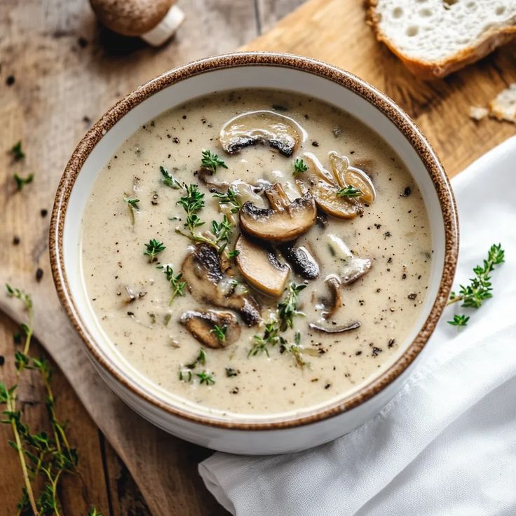
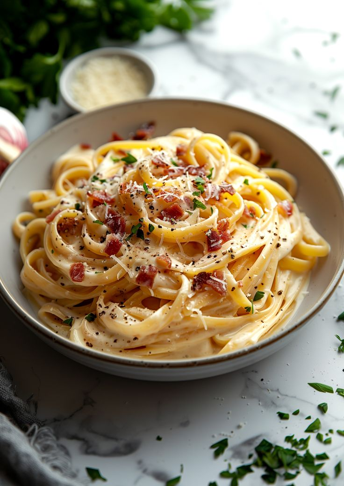
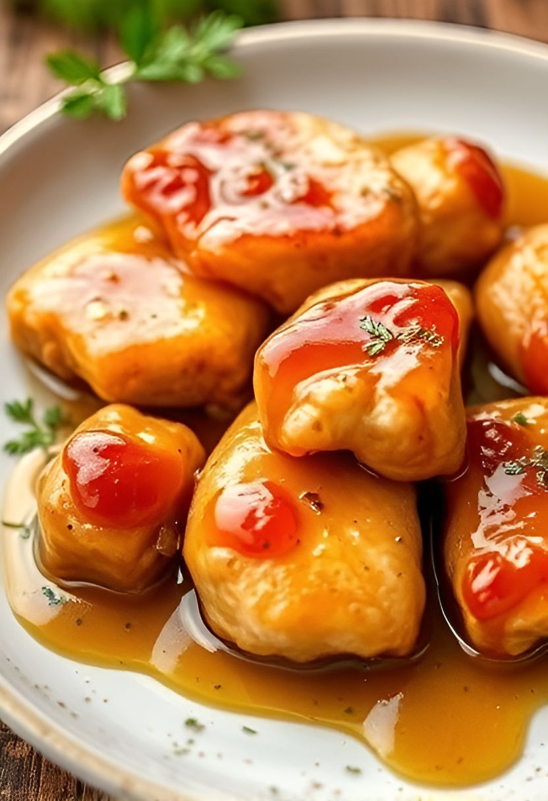
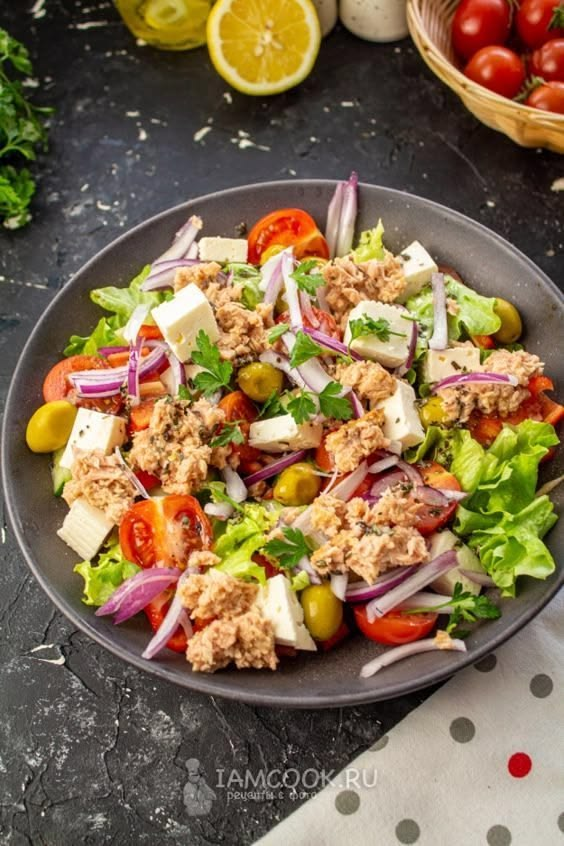
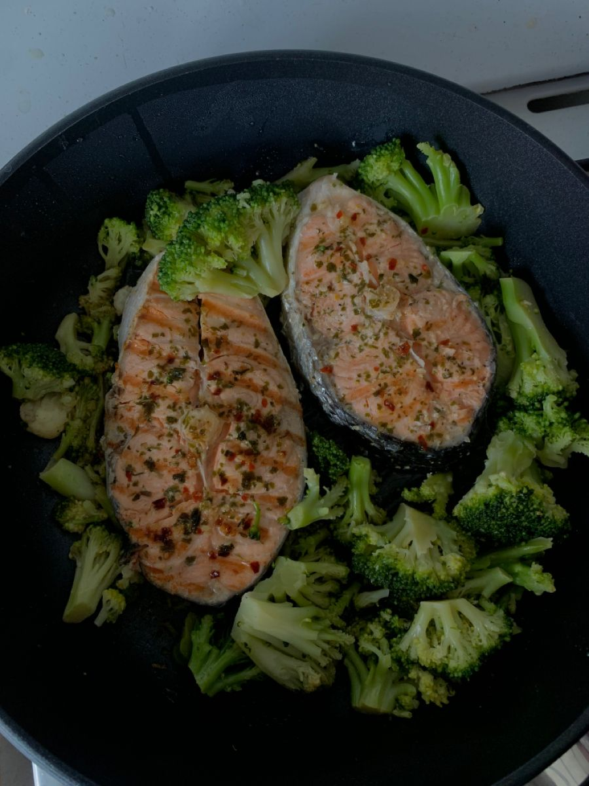
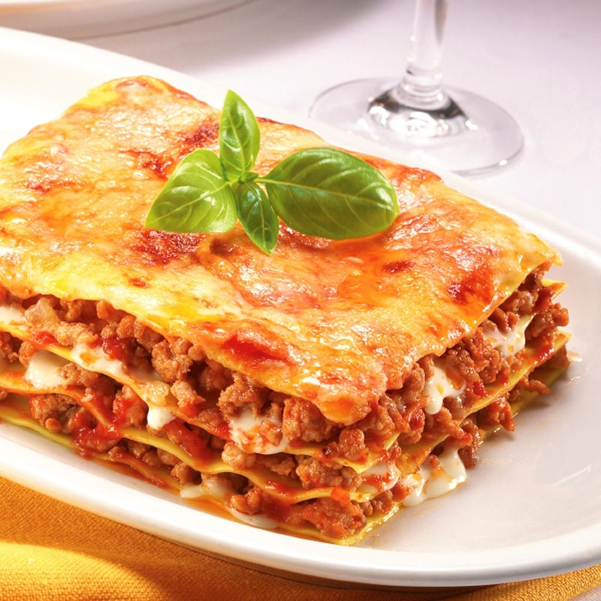

Обіди, що дарують сили
Смачні домашні страви, які хочеться повторити

ГРИБНИЙ КРЕМ-СУП

ПАСТА КАРБОНАРА

МЕДОВА КУРКА

ГРЕЦЬКИЙ САЛАТ

ЛОСОСЬ З БРОКОЛІ

Смачні домашні страви, які хочеться повторити





